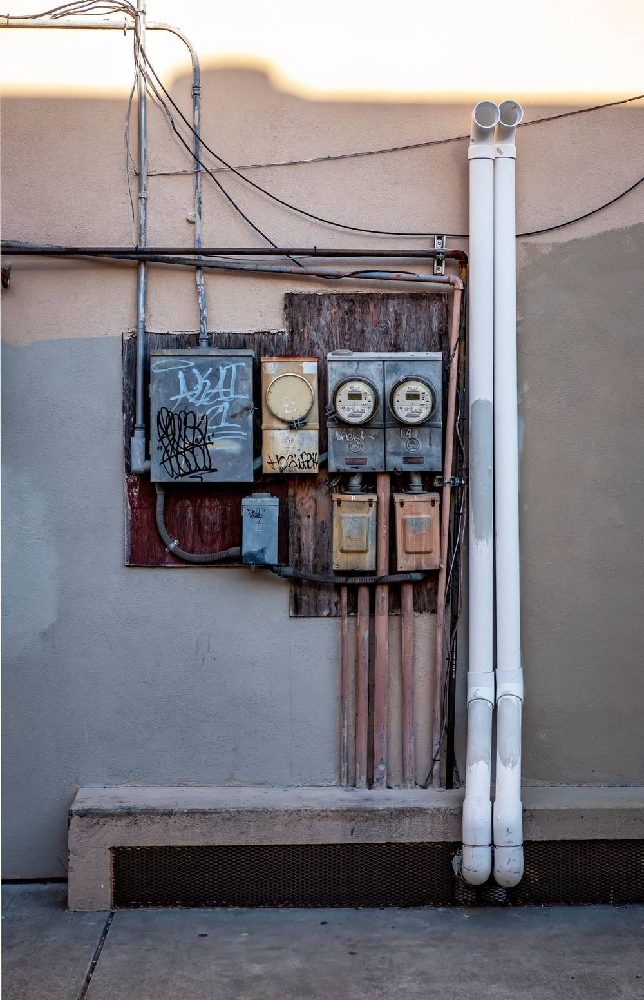
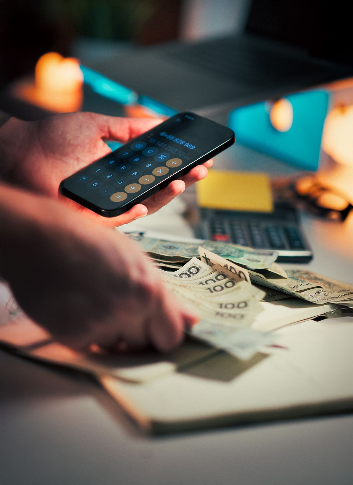

Tagihan listrik datang setiap bulan, dan cara paling gampang mengeceknya sekarang adalah lewat HP. Kamu tidak perlu menunggu kertas tagihan sampai ke rumah atau datang ke loket pembayaran. Aplikasi resmi PLN, PLN Mobile, menampilkan tagihan bulan berjalan lengkap dengan nama pelanggan, daya, dan jumlah yang harus dibayar.
Artikel ini menjelaskan cara cek tagihan listrik PLN di HP dari awal sampai bisa dibayar, khusus untuk listrik pascabayar yang ditagih bulanan. Ada juga cara membedakannya dengan listrik token, supaya kamu tidak salah langkah. Semua keterangan mengikuti deskripsi resmi aplikasi PLN Mobile di Google Play per Oktober 2026.
Bedakan dulu: pascabayar dan token prabayar
PLN punya dua jenis pelanggan rumah tangga. Pascabayar berarti kamu memakai listrik dulu, lalu membayar tagihannya setiap bulan. Token prabayar berarti kamu membeli token dulu, lalu memasukkan nomor token ke meteran sebelum listrik bisa dipakai. Artikel ini membahas yang pascabayar, karena hanya jenis ini yang punya tagihan bulanan untuk dicek. Kalau meteran di rumahmu memakai token, yang perlu kamu cek adalah sisa token, bukan tagihan. Kamu bisa membedakannya dari meteran: meteran token biasanya punya tombol angka untuk memasukkan nomor token, sedangkan meteran pascabayar tidak.
Siapkan ID pelanggan 12 digit
Untuk mengecek tagihan, kamu butuh satu hal: ID pelanggan. Nomor ini terdiri dari 12 digit angka dan melekat pada satu meteran listrik. Kamu bisa menemukannya di beberapa tempat. Pertama, di badan meteran listrik di rumah, biasanya tertera pada stiker atau pelat. Kedua, di struk pembayaran listrik bulan-bulan sebelumnya. Ketiga, di rekening atau tagihan kertas yang pernah kamu terima.
Catat nomor itu di HP supaya tidak perlu mencari lagi bulan depan. Jangan membagikan ID pelanggan ke orang yang tidak berkepentingan, karena nomor ini dipakai untuk melihat dan membayar tagihan atas namamu.

Cara cek tagihan di PLN Mobile
PLN Mobile adalah aplikasi resmi dari PT PLN (Persero) dan bisa diunduh gratis dari toko aplikasi resmi. Per akhir September 2026, aplikasi ini sudah berada di versi 8.1.2. Langkahnya seperti ini:
- Pasang PLN Mobile dari toko aplikasi resmi di HP-mu, lalu buka aplikasinya.
- Daftar atau masuk dengan nomor HP dan data diri yang diminta aplikasi. Ikuti saja petunjuk di layar sampai akunmu aktif.
- Tambahkan ID pelanggan 12 digit yang sudah kamu siapkan. Aplikasi akan menampilkan nama pelanggan dan daya listrik yang terdaftar pada ID itu. Periksa, pastikan namanya benar.
- Pilih ID pelanggan itu untuk melihat tagihan bulan berjalan. Yang tampil antara lain nama pelanggan, daya, periode tagihan, angka meter, dan total yang harus dibayar.
- Simpan ID pelanggan itu di aplikasi. Bulan depan kamu tinggal membuka aplikasi dan memilih ID yang sama, tanpa mengetik ulang.
Kalau aplikasi menampilkan ID yang tidak kamu kenal atau nama pelanggan yang salah, jangan lanjutkan pembayaran. Periksa lagi digitnya satu per satu, karena satu angka salah saja bisa membuka tagihan orang lain.
Sekalian bayar tagihannya dari aplikasi yang sama
Setelah tagihan terlihat, kamu bisa langsung membayarnya tanpa pindah aplikasi. PLN Mobile menyediakan pembayaran lewat Virtual Account bank, dompet digital, dan kartu kredit. Pilih cara yang kamu punya, ikuti petunjuk pembayaran di layar, lalu simpan bukti bayarnya.
Tagihan listrik pascabayar biasanya jatuh tempo tanggal 20 setiap bulan. Usahakan membayar sebelum tanggal itu supaya tagihan bulan itu selesai tepat waktu. Kalau kamu membayar lewat dompet digital atau m-banking lain di luar PLN Mobile, kamu tetap butuh ID pelanggan yang sama, jadi nomor 12 digit tadi tetap berguna.

Tagihan melonjak? cek dulu sebelum protes
Kadang tagihan bulan ini terasa jauh lebih besar dari biasanya. Sebelum mengadu, ada dua hal yang bisa kamu cek sendiri. Pertama, bandingkan angka meter di tagihan dengan angka yang tertera di meteran rumahmu. Kalau angkanya beda jauh, kemungkinan ada kesalahan pencatatan.
Kedua, PLN Mobile punya fitur catat meter mandiri (SwaCAM). Dengan fitur ini kamu bisa memfoto dan mengirim angka meter sendiri lewat aplikasi, supaya tagihan dihitung dari angka meter yang benar, tanpa menunggu petugas datang. Kalau sesudah dicek tagihanmu tetap terasa janggal, laporkan lewat fitur pengaduan di aplikasi yang sama. Pengaduan itu dilengkapi fitur Auto Dispatch yang meneruskannya ke petugas teknis terdekat. Kamu juga bisa menghubungi contact center PLN di nomor 123 atau menulis ke helpdesk di pln123@pln.co.id.
Intinya
Mengecek tagihan listrik PLN di HP sebenarnya hanya butuh tiga hal: ID pelanggan 12 digit, aplikasi PLN Mobile, dan koneksi internet. Sekali ID tersimpan, bulan-bulan berikutnya kamu tinggal membuka aplikasi untuk melihat tagihan, membayarnya, dan menyimpan buktinya. Kalau tagihan terasa tidak wajar, bandingkan angka meternya dan pakai fitur catat meter mandiri sebelum mengadu. Semua keterangan di artikel ini mengikuti deskripsi resmi PLN Mobile per Oktober 2026.
← Kembali ke Other